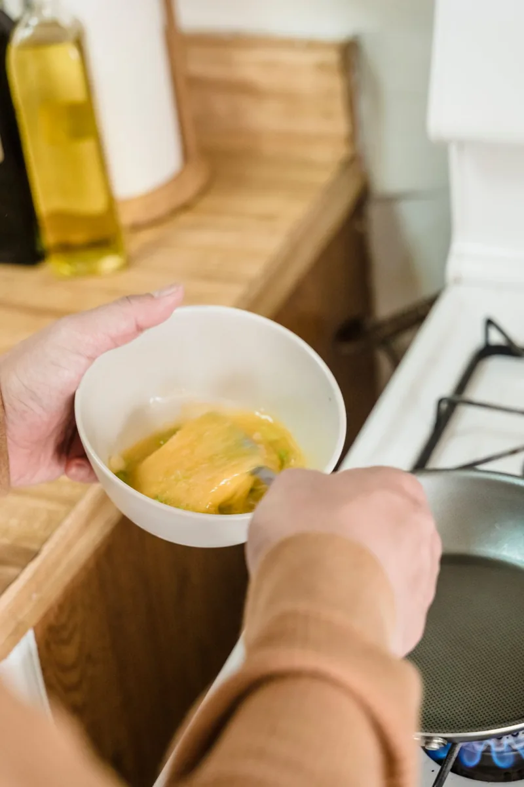
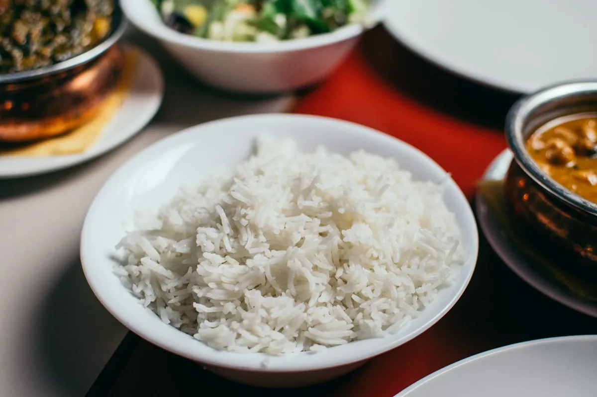
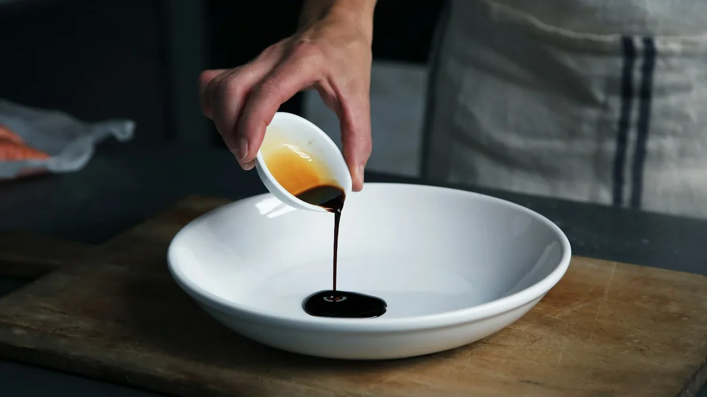
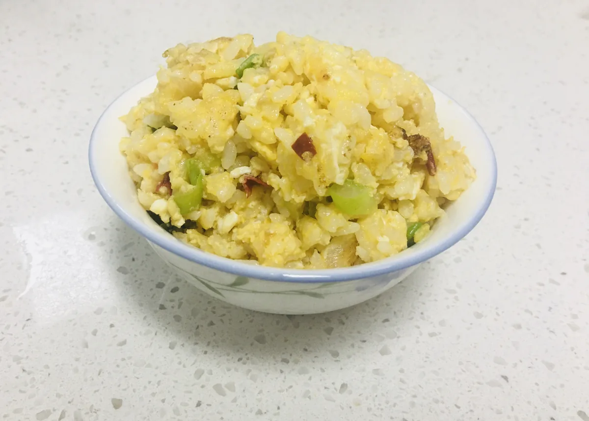

Check your tray: cold rice, eggs, oil, peas or mixed vegetables, spring onion and soy sauce. Everything should be ready before the pan gets hot.
What you need
Enough for 1–2 servings. Check your tray before you begin.
- 1 bowl cold cooked rice (day-old rice works best)
- 2 eggs
- 1–2 tablespoons cooking oil
- Handful of frozen peas (or mixed vegetables)
- 1 spring onion, finely chopped
- 1–2 teaspoons light soy sauce
- Pinch of salt and white pepper (optional)
Teacher tip: Cold rice stays separate in the pan. Hot, sticky rice turns mushy.
Safety first
- Wash your hands with soap and water.
- Tie back long hair and roll up sleeves.
- Keep pan handles turned inwards.
- Ask before you turn the hob on or off.
- Wipe spills straight away so nobody slips.
Method
Work through the steps in order. Read the instruction, then look at the picture.
Crack 2 eggs into a bowl. Beat with a fork or chopsticks until the yolk and white are mixed. Add a tiny pinch of salt if you like.

Heat 1 tablespoon of oil in a wok or frying pan over medium heat. Pour in the eggs and gently scramble until just set. Push them to one side, or tip onto a plate.
Add a little more oil if the pan looks dry. Tip in the cold cooked rice. Break up any lumps with your spatula so the grains separate.

Stir in the peas (or mixed vegetables) and most of the spring onion. Keep stirring so nothing sticks to the bottom of the pan.
Drizzle 1–2 teaspoons of light soy sauce around the pan. Mix well so every grain of rice is lightly coated. Taste — add a little more if needed.

Return the scrambled egg to the pan. Toss everything on a fairly high heat for 1–2 minutes until hot and steaming. Turn the heat off when ready.
Spoon onto a clean plate. Sprinkle the leftover spring onion on top. Leave the pan to cool, then wash up carefully.

Well done!
You have made egg fried rice. Check your hob is off, then enjoy your food with the class.